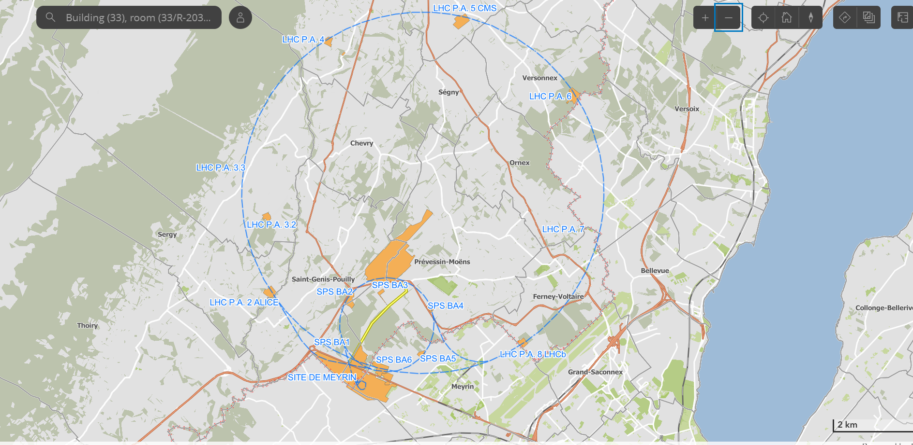

A
Alice
Sends the secret bits
Chooses random bits and encodes each one into a photon using one of two measurement bases.
Meet Alice, Bob and Eve. Send secret bits, let someone eavesdrop, and see how quantum physics can reveal that something is wrong.
A hands-on introduction to quantum key distribution. No account needed.
Move the interception slider, then run the experiment. The dots travel between the people; the results show what they can keep and what looks suspicious.
Chooses random bits and encodes each one into a photon using one of two measurement bases.
Intercepts some photons and measures them. If she picks the wrong basis, she can disturb the signal.
Measures incoming photons with randomly chosen bases. Later, he and Alice compare bases—not their secret bits.
To read a photon, Eve must measure it. She does not know Alice’s basis, so sometimes she measures in the wrong one and changes the state Bob receives.
After keeping only matching-basis rounds, they compare a small sample of bits. Extra mismatches can reveal eavesdropping. No errors in a small sample does not prove nobody listened.
Alice and Bob publicly compare which basis they used. They keep only matching-basis rounds.
They compare a sample of kept bits. Too many differences can reveal eavesdropping or noise.
If checks pass, real systems use error correction and privacy amplification. This demo simplifies those steps.
| # | Alice's bit | Alice's basis | Eve? | Bob's basis | Bob's bit | Round |
|---|---|---|---|---|---|---|
| Run the experiment to see sample rounds. | ||||||
A map based on the CERN site view you provided. Tap the detector markers to learn what each experiment studies. Zoom and drag to explore the LHC ring and surrounding area.


CERN’s main site near Geneva. Select any marker to explore an experiment or facility.
Image: CERN / CERN Document Server
Explore official source ↗The base image is the CERN map screenshot provided for this project, so it does not depend on third-party map tiles or their 403 responses. Markers are approximate overlays for exploration, not survey-grade coordinates. The line shows the reported Meyrin–CMS–Meyrin out-and-back connection schematically; it is not a surveyed cable trace.
CERN's quantum communication research explores how quantum signals can travel between distant locations. These real projects are related to, but not identical to, the BB84 model above.

CERN researchers distributed polarisation-entangled photon pairs over an optical-fibre route from Meyrin to the CMS area and back.
Explore the experiment ↗
White Rabbit synchronises equipment with very precise classical timing signals. It is not encryption and does not create the entangled photons.
See how it works ↗CMS is a huge particle detector at the LHC. It is the area associated with one end of the fibre route—not the source of the quantum photons.
Explore CMS ↗Helps two parties establish a shared secret key and test for disturbance.
Shares linked quantum states between locations—a building block for quantum networks.
Classical precision timing and synchronisation. It is not a quantum encryption protocol.
Five short questions. Choose an answer to get immediate feedback.